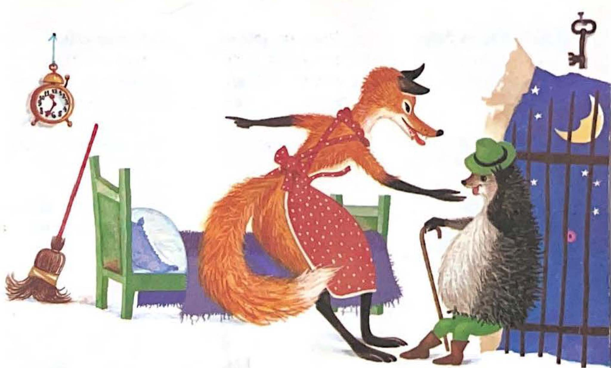
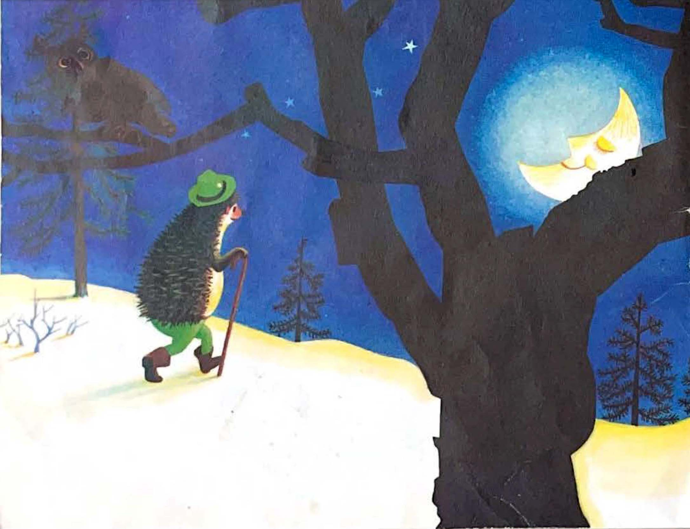
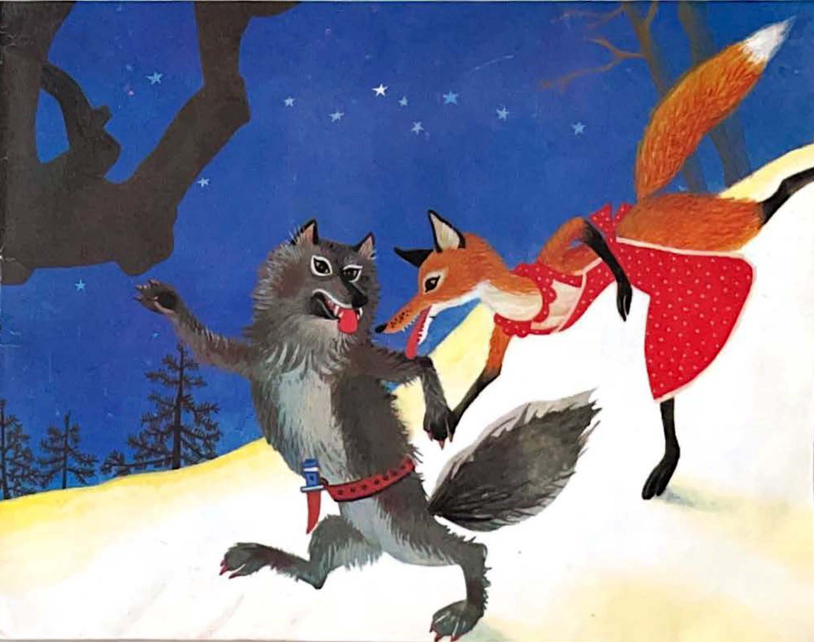
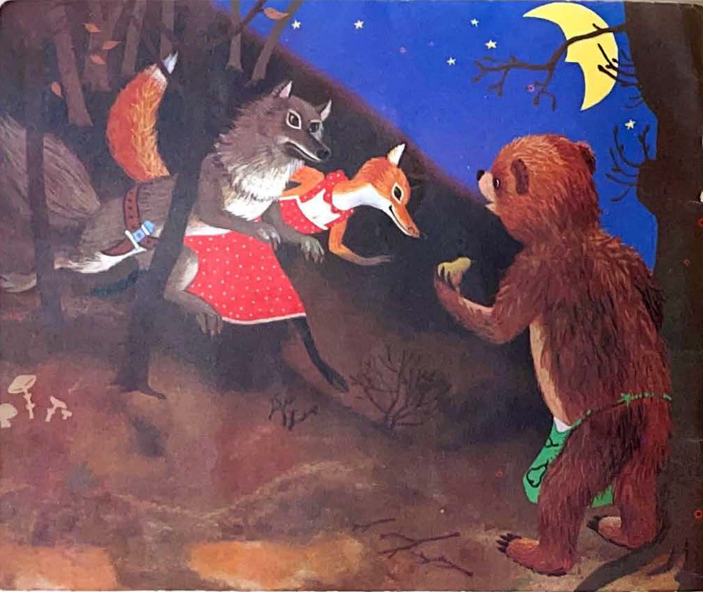
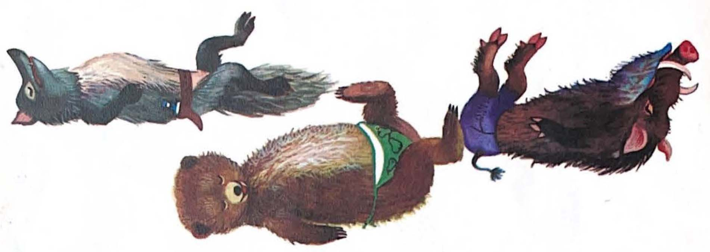
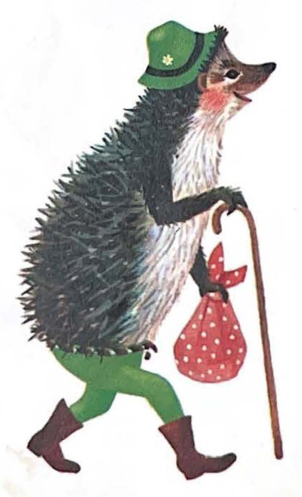

Slavni lovac
Po šumi,
širom,
bez staze,
puta,
Ježurka Ježić
povazdan luta.
Lovom se bavi,
često ga vide,
s trista kopalja
na juriš ide.
I vuk,
i medo,
pa čak i ovca,
poznaju ježa,
slavnog lovca.
Jastreb ga štuje,
vuk mu se sklanja,
zmija ga šarka
po svu noć sanja.
Pred njim,
dan hoda,
širi se strava,
njegovim tragom
putuje slava.

Lijino pismo
Jednoga dana,
vidjeli nismo,
Ježić je,
kažu,
dobio pismo.
Medeno pismo,
pričao meca,
stiglo u torbi
poštara zeca.
Adresa kratka,
slova k'o jaja:
"Za druga
Ježa
Na kraju gaja"
U pismu piše:
"Ježurka,
brate,
sanjam te često
i mislim na te.
Evo ti pišem
iz kamenjara
guskinim perom.
Divno li šara!
Dođi na ručak
u moju logu,
požuri samo,
ne žali nogu.
Sa punim loncem
i masnim brkom
čekat ću na te,
požuri trkom.
Nježno te grli
medena lica
i pozdrave šalje
lisica Mica."
Jež se veseli:
Na gozbu, veli,
tu šale nema,
hajd da se sprema.
Ježurka Ježić
lukavo škilji,
pregleda bodlje
i svaku šilji.
Ako bi usput
došlo do boja,
nek bude spremna
obrana moja.
Sunčani krug se
u zenit dig'o
kad je Ježurka
do lije stig'o.
Pred kućom-logom,
kamenog zida,
Ježurka Ježić
svoj šešir skida,
klanja se,
smješka,
kavalir pravi,
biranom frazom
lisicu zdravi:

Kod lijine kuće
Dobar dan,
lijo,
vrlino čista,
klanjam se tebi,
sa bodlja trista.
Nek perje pjetla
krasi tvoj dom,
kokoš nek sjedi
u loncu tvom!
Guskino krilo
lepeza tvoja,
a jastuk meki
patkica koja.
Živjela vječno
u miru,
sreći,
nikada lavež
ne čula pseći.
I još ti ovo
na kraju velim:
ja sam za ručak
trbuhom cijelim!
Otpoče ručak
čaroban,
bajni.
I jež
i lija
od masti sjajni.
Jelo za jelom
samo se niže,
Ježurka često
zdravicu diže:
u zdravlje lije
i njene kuće,
za pogibiju
lovčeva Žuće.
Niže se ručak
četverosatni,
zategnu trbuh
k'o bubanj ratni.

Noć
Evo i noći,
nad šumom cijelom
nadvi se suton
sa modrim velom.
Promakna samo
leptirić koji
i vjetar noćnik
listove broji.
Utihnu šuma,
nestade graje,
mačaka divljih
oči se sjaje.
Skitnica svitac
svjetiljku pali,
čarobnim sjajem
putanju zali.
A sova huknu
svoj ratni zov:
Drž'te se,
ptice,
počinje lov!

Rastanak
Ježić se diže,
njuškicu briše.
Ja moram kući,
dosta je više.
Dobro je bilo,
na stranu šala,
lisice draga,
e, baš ti hvala.
Moja je kuća
čvrsta k'o grad,
prenoći u njoj.
Kuda ćeš sad?
Tako ga lija
za konak sladi,
a jež se brani,
šta da se radi:
Zahvaljujem se
pozivu tvom,
al' mi je draži
moj skromni dom!
Ostani, kume,
lija sve guče,
moli ga,
zove,
za ruku vuče.
Al' jež,
tvrdoglav,
osta pri svom.
Draži je meni
moj skromni dom!
Šušteći šumom
jež mjeri put,
kroz granje mjesec
svijetli mu put.
Ide jež,
gunđa,
dok zvijezde sjaju:
Kućico moja
najljepši raju!

Potjera
Ostade lija,
misli se:
Vraga,
što mu je kuća
toliko draga?
Kad Ježić tako
žudi za njom,
bit' će to,
bogme,
bogati dom.
Još ima,
možda,
od perja pod,
pečene ševe
krase mu svod.
Ta kuća,
vjeruj,
obiljem sja.
Poći ću,
kradom,
da vidim ja.
Vuk
Požuri lija,
nečujna sjena,
paperje meko
noga je njena.
Dok juri tako
uz grobni muk,
pred njom,
na stazi,
stvori se vuk.
Grrrr,
kuda žuriš,
kaži-der lovcu;
možda si,
negdje,
pronašla ovcu?
Idem da doznam
lija sve duva
zašto jež kuću
toliko čuva.
Eh, kuća.
trice!
Veli vuk zao.
Ta ja bi svoju
za jagnje dao!
Poći ću s tobom,
jer volim šalu,
hoću da vidim
ježa
budalu!

Medo
Dok jure dalje
brzo k'o strijela,
srete ih medo,
prijatelj pčela.
Sumljiva žurba
medo ih gleda
možda ste našli
jezero meda?
Ne, nego maštu
golica moju,
zašto jež voli
kućicu svoju.
Kućica,
glupost!
Moje mi njuške,
svoju bih dao
za gnjile kruške.
Za satić meda
dat' ću je svakom!
Govori medo
na jelu lakom.
Poći ću s vama,
jer volim šalu,
hoću da vidim
ježa
budalu!

Divlja svinja
Sve troje jure
k'o divlja rijeka,
odjednom
evo
kaljuga neka.
Divlja se svinja
u njoj banja,
pospano škilji
i jelo sanja.
Hr-nji, junaci,
sumnjiva trka,
negdje se,
valjda,
bogovski krka?!
Poskoči svinja
uz mnogo graje,
a vuk joj nato
odgovor daje:
Tražimo razlog,
blatnjava zvijezdo,
zašto jež voli
rođeno gnijezdo!
Rođeno gnijezdo!
Tako mi sala,
za pola ručka
ja bih ga dala!
Poći ću s vama,
jer volim šalu,
hoću da vidim
ježa
budalu!

PRED JEŽEVOM KUĆICOM
Svi jure složno
ka cilju svom,
kuda god prođu
prasak
i lom!
Pristigli ježa,
glede:
on stade
kraj neke stare
bukove klade.
Pod kladom rupa,
tamna i gluha,
prostirka u njoj
od lišća suha.
Tu Ježić uđe,
pliva u sreći,
šušti i pipa
gdje li će leći.
Namjesti krevet,
od pedlja duži,
zijevnu,
pa leže
i noge pruži.
Sav blažen,
sretan,
niže bez broja:
Kućico draga,
Slobodo moja!
Palato divna,
drvenog svoda,
kolijevko meka,
lisnatog poda,
uvijek ću vjeran
osati tebi,
nizašto ja te
mijenjao ne bi'!
U tebi živim
bez brige,
straha
i branit ću te
do zadnjeg daha!

TRI GALAMDŽIJE
Medvjed i svinja
i s njima vuja
grmnuše gromko
prava oluja:
Budalo ježu,
bodljivi soju,
zar tako cijeniš
straćaru svoju?!
Koliba tvoja
prava je baba,
krov ti truo,
prostirka slaba.
Štenara to je,
tijesna,
i gluha,
sigurno u njoj
imaš i buha!
Kućicu takvu,
hvališo mali,
za ručak dobar
svakom bi dali!
Rekoše tako
njih troje, ljuti,
dok mudra lija
po strani šuti.

JEŽEV ODGOVOR
Diže se Ježić,
oči mu sjaje,
gostima čudnim
odgovor daje:
Ma kakav bio
moj rodni prag,
on mi je ipak
mio i drag.
Prost je i skroman,
ali je moj,
tu sam slobodan
i gazda svoj.
Vrijedan sam,
radim,
bavim se lovom
i mirno živim
pod svojim krovom.
To samo hulje,
nosi ih vrag
za ručak daju
svoj rodni prag!
Zbog toga samo,
lude vas troje,
čestite kuće
nemate svoje.
Živite,
čujem,
od skitnje,
pljačke
i svršit ćete
naopačke!
To sluša lija,
pa sudi zdravo:
Sad vidim i ja,
jež ima pravo!
To reče, klisnu
jednom ćuviku,
a ono troje
digoše viku:
Jež nema pravo,
nastranu šala;
a i ti,
lijo,
baš si budala!

KRAJ
Šta dalje bješe,
kakav je kraj?
Pričat ću i to,
potanko, znaj.
Krvnika vuka,
jadna mu majka,
umlati brzo
seljačka hajka.
Trapavog medu,
oh, kuku,
lele,
do same smrti
izbole pčele.
I divlja svinja
pade k'o kruška,
smače je zimus
lovačka puška.
Po šumi, danas,
bez staze,
puta
Ježurka Ježić
lovi i luta.
Vještak i majstor
u poslu svom,
radi i čuva
rođeni dom.

